Overview of the Pivotal Analytics Interface
After you create your Pivotal Analytics account and login, the Pivotal Analytics application displays in your Web browser. For new users, the application opens in the Data Sources area.
The Pivotal Analytics application contains the following parts:
- Navigation Menu
Click the Collapse Menu arrow to collapse the menu to a set of icons without labels. Click the arrow again to expand the menu to include the labels.
The Navigation Menu contains the following options:- All Projects--Create a new project, Select an existing project, or view a summary page of all projects.
See Managing Projects. - Visualizations–View and create visualizations of your data.
See Data Visualization.- Canvas View
- Auto-Charts
- Raw Data: Events
- Raw Data: Insights
- Dashboards–Consolidate data visualizations for your project on one or more dashboard pages. You can also share these pages with other Pivotal Analytics users.
See Dashboards. - Data Sources–Define the files, and application feeds that contain the data you analyze using Pivotal Analytics.
See Data Source Management Guide. - Data Subsets–Define queries, joins and other means to analyze your data. You can also create summary and unique aggregates.
See Data Subsets. - Manage–Edit data sampling and sharing settings for your project. Administrators can also view other projects.
See Administration Guide.
- All Projects--Create a new project, Select an existing project, or view a summary page of all projects.
- User Menu
From this menu you can edit your user profile, change your password, view an account overview, edit global settings, and logout.
See User Management. - Name of account and project.
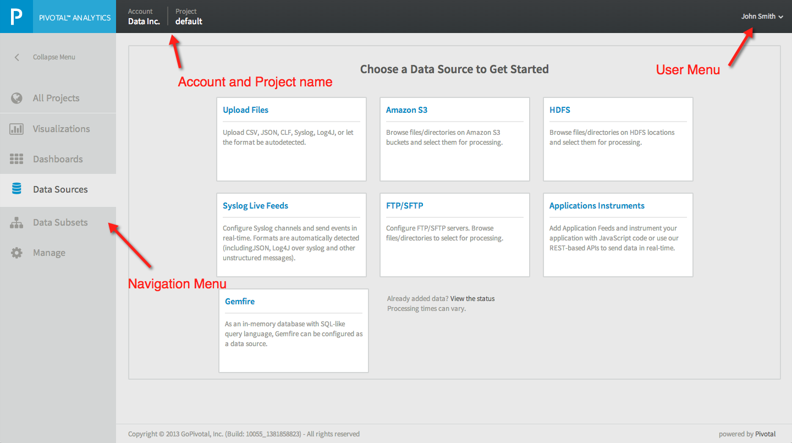
Data Visualization Overview
Pivotal Analytics allows business analysts to visualize the data ingested by Pivotal Analytics in a variety of ways. You can create and save your own, specific charts and reports and share them with other Pivotal Analytic users, and you can also download these charts and reports in a variety of graphics formats or as a PDF file. You can choose to display the charts in various formats such as line graphs, bar charts, pie charts, or in tabular format.
You can combine one or more visualizations and save them to a Dashboard. When you view a dashboard, all data in the saved visualizations display the current data set. You can share dashboards with other Pivotal Analytics users.
Auto-Charts
The Auto-Charts feature presents a set of possible visualizations of your data that you can use as a starting point to create the visualizations you need to analyze your data. These visualizations are automatically created by Pivotal Analytics based only on the data in your project and may not provide a useful analysis of your data set. To create custom visualizations, see ??Canvas View.
To view the Auto-Charts:
- Login to Pivotal Analytics.
- Select Visualizations > Auto-Chart from the navigation menu on the left.
The Auto-Charts display.
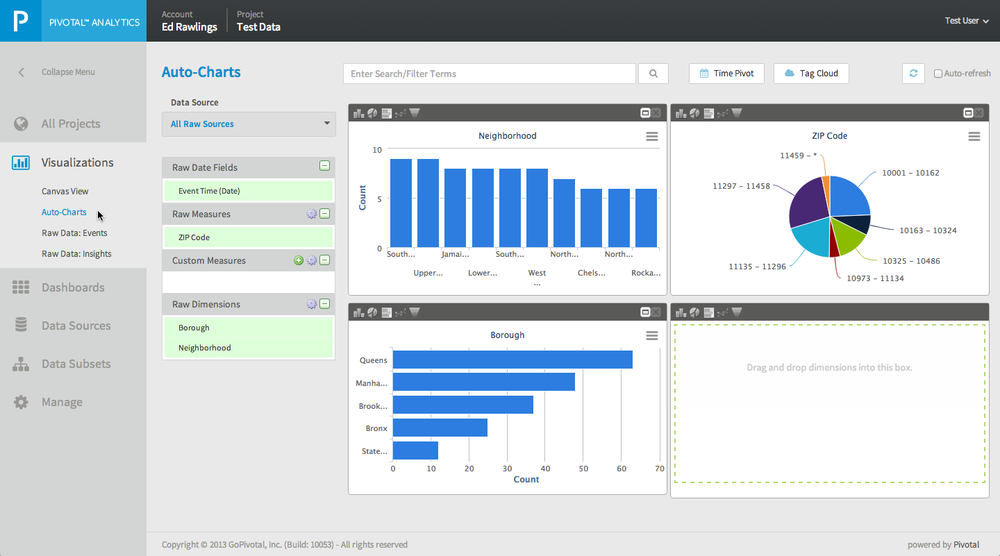
You can change the type of visualization in each chart by selecting one of the icons at the top of the chart:
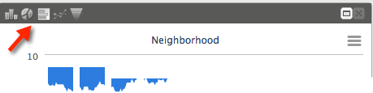
If any of the charts present useful data, you can save the charts and add them to a Dashboard.
To save an Auto-Chart:
- Login to Pivotal Analytics
- Select Visualizations > Auto-Charts from the navigation menu on the left.
- Click the expand icon in the upper-right corner of a chart.
The chart opens in expanded view. - Click Save Canvas.
- Enter a name for the Canvas.
- Click Save.

Terminology:
HiveQL Queries
Summary Aggregates
Unique Aggregates
Visualizations
Canvas View
After your data is uploaded and processed, the raw measures and dimensions extracted from your data are available for creating charts and reports. Canvas View is an interactive environment where you create custom charts and reports by dragging and dropping data elements onto the canvas.
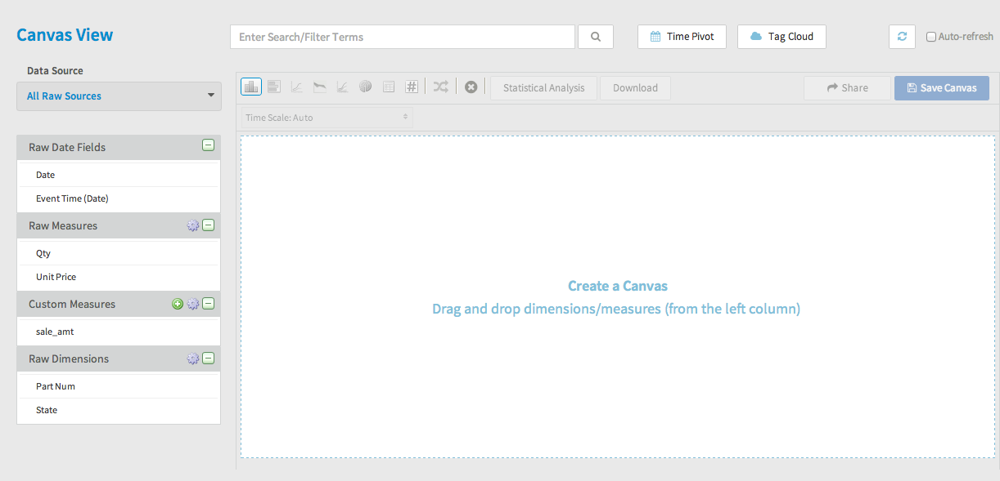
The left portion of Canvas view displays the data sources and files that you have defined in your project along with the data fields extracted from the data during processing by Pivotal Analytics.
Selecting a Data Source
You use the Data Source selector to select the data source you want to work with to create charts and reports, or you can select all data sources. The fields that correspond to the data sources you choose display below this selector. Click the down arrow in the Data Source selector to open the list of data sources. The list is divided into two sections, Raw Data Sources and Raw Data Files ??what's the difference?
Raw Date Fields
The Raw Date Fields section displays fields that contain date and time information. The Event Time field is created by Pivotal Analytics and contains the time that the data was processed by Pivotal Analytics ??true? If the data source is a static file, this field indicates when the data was processed by Pivotal Analytics, not the date that the event occurred. If the data source is an application feed or Live feed, this filed contains the time when the data arrived for processing by Pivotal Analytics.
Raw Measures
The Raw Measures section displays fields that contain quantitative numeric information such as prices, transaction amounts, quantities, or counts. Pivotal Analytics attempts to correctly classify data fields as Measures or as Dimensions, but does not always have sufficient information to correctly classify the data. For example, a part number field may contain only numbers and therefore is assumed to be a measure when it should actually be classified as a dimension. You can re-classify measures as dimensions. See ??.
Pivotal Analytics breaks measures into buckets to improve data analysis. For example, the Qty field is divided into buckets of 10:
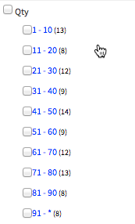
To change the bucket divisions, see
Custom Measures
The Custom Measures section allows you to create custom fields by calculating a new value using existing fields and constants. For example, you can add a custom measure that multiplies a price by the quantity sold to create a total sales amount field.
Raw Dimensions
The Raw Dimensions section displays fields that contain dimension type of data. Dimensions are usually text fields that describe aspects of the data such as gender, location, type of transaction, etc. If Pivotal Analytics incorrectly classifies a data field as a dimension, you can re-classify the field as a measure.
Modifying Data Fields
You can change the following attributes of the data fields in your project:
- Change the name of a field
- Re-classify a Raw Measure as a dimension
- Re-classify a Raw Dimension as a measure
- Change the way the field values are bucketed
To modify a data field:
- Hover over a field name and click the edit icon.
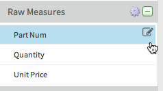
The Schema Information Dialog box displays.
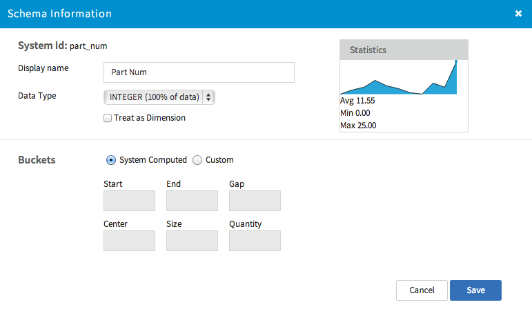 - Do one of the following:
- Change the name of the field, type a new name in the Display name field.
- To change a Raw Measure to a dimension, select Treat as Dimension.
- To change a Raw Dimension to a measure, select Treat as Measure.
- To change the buckets displayed, select Custom in the Buckets section and enter values ??either for Start, End, Gap OR Center Size Quantity.?? not sure of how this works ... after entering center,size,qty, the other values became un-editable.
- Click Save.
About Chart Types
When you create a chart or report, you can specify an appropriate type of chart for the data you are visualizing. You can quickly change types to preview their output.
The following types of charts are available:
| Icon | Description |
|---|---|
| 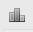 | Column Chart |
| Bar Chart | |
| 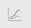 | Stacked chart |
Area chart | |
| Line chart | |
| Pie chart | |
| Table | |
| KPI |
+Filtering in charts
Sharing a Chart or Report
You can share a chart or report by sending a URL or by embedding Javascript code in a Web page that displays the chart or report. Users who access a shared report or chart do not need to have a Pivotal Analytics account but they must have network connectivity to the Pivotal Analytics application.
To share a chart or report:
- Select Dashboards from the navigation menu on the left.
- Select the dashboard that contains the chart you want to share.
- Click the Configure (gear) icon in the cell containing the chart you want to share.
- Select Edit Chart.
The selected chart opens in Canvas View. - Click the Share button.
The Sharing Settings dialog box opens. - Enter a name for your shared chart in the Title field.
- Click Next.
A dialog box opens that displays the following:- Javascript code you can copy and paste into an HTML page to embed the chart in a Web page.
- A URL you can share with others who want to view this chart.
Note: You can also export a chart as an image or PDF file. See ??
Exporting or Printing a Chart or Report
You can export a chart or report as an image or PDF file and you can also print them.
To export a chart or report:
- From Canvas view, Auto Charts, or from a cell in a dashboard, click the Export button:
A menu displays. - From this menu select one of the following options:
- Print Chart
- Download PNG image
- Download JPEG image
- Download PDF document
- Download SVG vector image
When you select Print, the print dialog box of your browser displays. Select your printing options.
When you select a Download option, the file downloads through your Web browser.
About Time Pivot
The Time Pivot function allows you to limit the data displayed in your visualizations to a specific time range. Time Pivot is available for the following types of visualizations:
- Canvas
- Auto-Chart
- Raw Data: Events
To use the Time Pivot function:
- Click the Time Pivot button above the visualization.
The Time Pivot selector displays. - Select a date field from the Raw Date Fields section beneath Raw Sources and drag it into the Time Pivot area.
- Select an overall time range from the Last: selector. You can select 1d, 1w, 1m, 3m, 1y, or ALL.
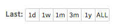
Time Pivot displays your data as buckets of events. A bar chart indicates the number of events for each time bucket. - Use the sliders to select a date range, or enter a date range using the Start Date and End Date fields. You can also click on a bar in the time pivot bar chart to select only the time value of the bar.
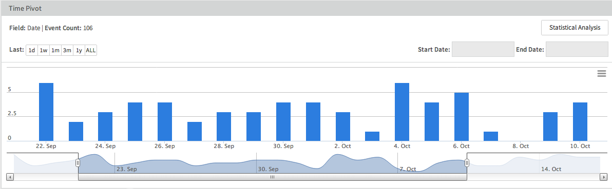 - Click the Time Pivot button again to close the Time Pivot selector. The time range you have selected remains in effect.
About Tag Cloud
The Tag Cloud automatically extracts text strings from your data. You can use these tags to filter the displayed data. Hover over a tag to see the number of events that contain the text string. Click on a tag to filter by that value.
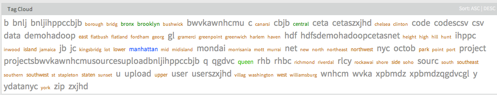
To sort the tags alphabetically, click Sort ASC|DESC, in the upper-right portion of the tag cloud area.
??Colors? sizes? extraneous tags?
The font size of the tags becomes larger for higher event counts.
Raw Data: Events
The Raw Data: Events view allows you to view a list of the raw data that has been loaded into your project. In this view you can search and filter the list to drill down into a specific record or set of records.
To view Raw Data events:
- Login to Pivotal Analytics.
- Select Visualizations > Raw Data: Events from the navigation menu on the left.
- In the Raw Source Names drop-down list, select the data file containing the raw events you want to view.
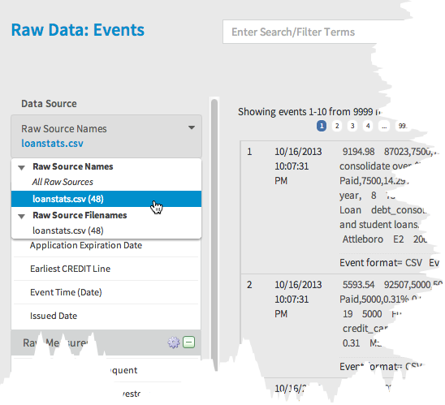
A listing of raw data events displays. - You can filter the list of events using the following techniques:
- Select a Raw Measure or Dimension from the Data Source column.
- Click on field value in an event listing. Only events where the field matches this value display.
- Enter a search term in the search bar.
- Click Tag Cloud and click on a tag name.
- Click Time Pivot and select a time range.
Note that the filter values display above the list of raw events. Click the x in each displayed filter to delete the filter.
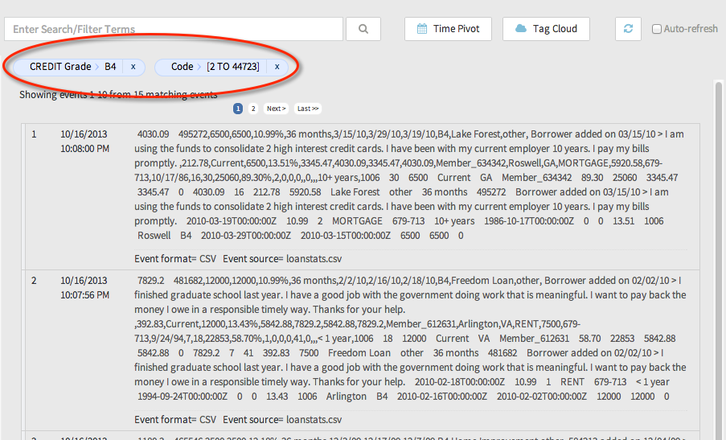
Raw Data: Insights
The Raw Data: Insights view displays pre-configured reports with statistical information about measures and dimensions from the raw data sources in your project. The charts presented on this page are not editable and you can not add additional charts.
To open this view, Select Visualizations > Raw Data: Insights from the navigation menu on the left.
Dashboards
Dashboards allow you to consolidate one or more reports and charts from your project on to one or more dashboard pages. A dashboard page consists of one or more cells. Each cell contains a report or chart. As you create a dashboard, you can modify the size and location of the cells. You can clone existing dashboards to create a new dashboard based on the original.
Before creating dashboards, create at least one chart. See Canvas View.
To create a dashboard:
- Select Dashboards from the left navigation menu.
The Dashboards page displays.
Note the Chart/Report list in the lower-left portion of the Dashboards page.
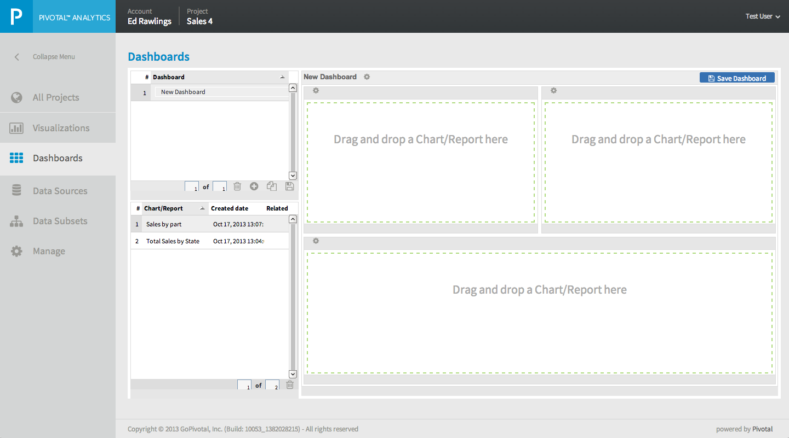 - Click the + icon located at the bottom of the list of dashboards.
- Type a name for your dashboard in its name field.
- Select an item from the Chart/Report list and drag it into one of the cells in the blank dashboard.
The chart displays in the cell. - Add additional charts as required.
- Click the Configure (Gear) icon to open the Dashboard Menu where you can modify the layout of the dashboard. From this menu you can:
- Save the dashboard
- Flip the dashboard cells horizontally or vertically
- Rotate the dashboard cells
- Refresh the chart contents on the dashboard.
- Click the Configure (gear) icon in a report cell to open the Report Menu. From this menu you can:
- Edit the chart (the view switches to Canvas View)
- Change the type of chart (Chose from Column, Bar, Areaspline, AreaStacked, Spline, Pie, or Table.)
- Edit the title of the cell
- Add cells to the dashboard
- Remove content from a cell
- Hide the footer
- Delete the cell
- Adjust the size and shape of the cells by clicking and dragging the separator lines between the cells.
- Click Save Dashboard.

To Delete a dashboard:
- Select Dashboards from the left navigation menu.
- From the list of dashboards, select the dashboard you want to delete.
- Click the trash icon below the list of dashboards.
To Clone a dashboard:
- Select Dashboards from the left navigation menu.
- From the list of dashboards, select the dashboard you want to clone.
- Click the clone icon below the list of dashboards.
Data Subsets
HiveQL
Summary Aggregates
Unique Aggregates
{kind=link}
{kind=link}
{kind=link}
{kind=link}
{kind=link}
{kind=link}
{kind=link}
{kind=link}
{kind=link}
{kind=link}
{kind=link}
{kind=link}
{kind=link}
{kind=link}
{kind=link}
{kind=link}
{kind=link}
{kind=link}
{kind=link}
{kind=link}
{kind=link}
{kind=link}
{kind=link}
{kind=link}
{kind=link}
{kind=link}
{kind=link}
{kind=link}
{kind=link}
{kind=link}